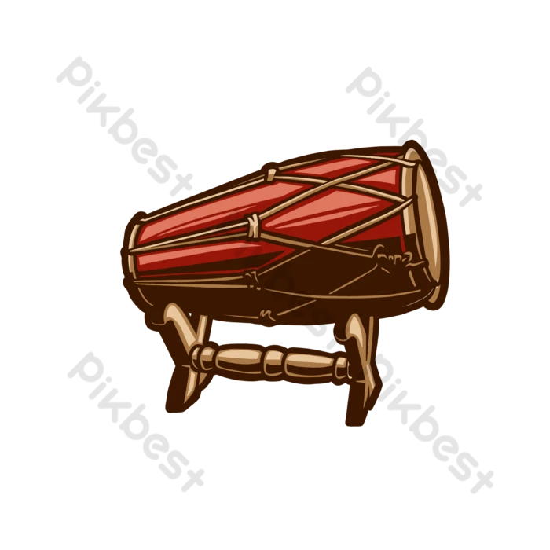
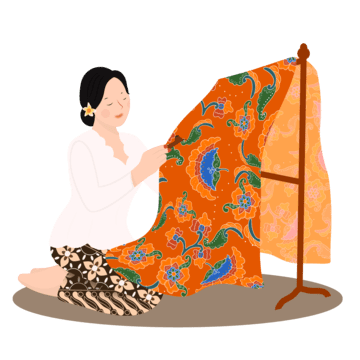
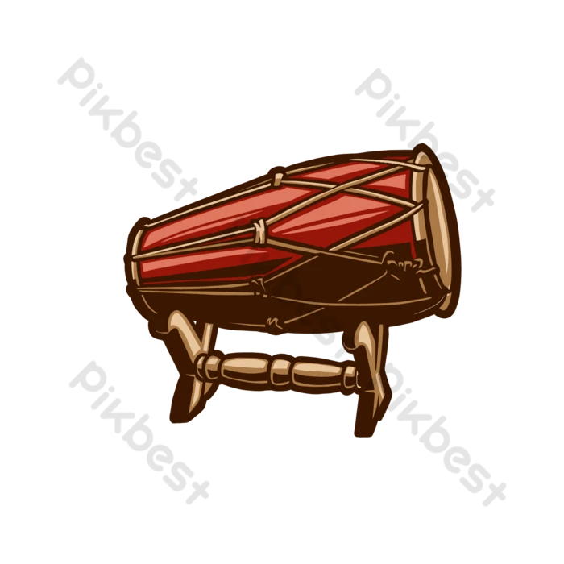
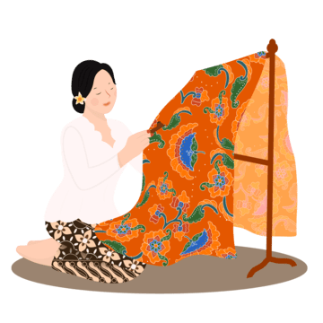

Integrated Learning Project (ILP) adalah penggabungan berbagai mata pelajaran dalam satu proyek besar yang berfungsi sebagai ujian praktik bagi siswa kelas 9. Melalui proyek ini, siswa dilatih untuk berpikir kreatif dan kritis dalam memecahkan masalah. Selain itu, pembagian kelompok dilakukan secara acak oleh wali kelas, sehingga siswa diharapkan dapat beradaptasi dan bekerja sama dengan teman yang mungkin belum terlalu akrab sebelumnya. Tahun ini, ILP lebih istimewa karena selain bazar, juga terdapat pentas seni. Awalnya, banyak siswa merasa kaget dan khawatir karena biasanya ujian praktik kelas 9 hanya berupa bazar. Namun, kehadiran pentas seni justru menjadi daya tarik tersendiri karena belum pernah ada pada tahun-tahun sebelumnya.
Dalam persiapan bazar, berbagai mata pelajaran berkolaborasi, antara lain Teknologi Informasi dan Komunikasi (TIK), Ilmu Pengetahuan Alam (IPA), Ilmu Pengetahuan Sosial (IPS), Matematika, Pendidikan Jasmani dan Kesehatan (Penjaskes), Pendidikan Pancasila dan Kewarganegaraan (PPKN), Bahasa Indonesia, Bahasa Inggris, serta Kesenian. Setiap mata pelajaran memiliki tugas masing-masing, seperti membuat produk dari kain batik untuk mata pelajaran Kesenian, meneliti bioteknologi ramah lingkungan dalam IPA, serta menyusun laporan keuangan bazar menggunakan Microsoft Excel dalam IPS. Selain itu, siswa juga menghitung keuntungan dan kerugian penjualan dalam Matematika, merancang senam irama atau tarian dalam Penjaskes, serta membuat produk edukatif tentang keberagaman budaya Indonesia dalam PPKN. Dalam mata pelajaran Bahasa Indonesia, siswa diminta untuk membuat iklan dan laporan sederhana, sedangkan dalam Bahasa Inggris, mereka membuat procedure text untuk produk bioteknologi serta abstrak perjalanan proyek ILP.
Selain bazar, siswa juga menampilkan pentas seni berjudul "PUSPANUSA", yang menonjolkan keindahan dan keberagaman budaya Indonesia melalui seni tradisional dan modern dari berbagai daerah. Kelompok "SERABI" berkolaborasi dengan "Nusantara on the Table" dalam pertunjukan yang menggabungkan tarian tradisional dengan sentuhan modern serta musik bertemakan budaya Indonesia dan lagu-lagu klasik. Penampilan ini disaksikan oleh orang tua, tamu undangan, siswa TK dan SD, teman-teman kelas 7 dan 8, kakak-kakak SMA, serta para guru dari berbagai unit pendidikan dan pihak yayasan.